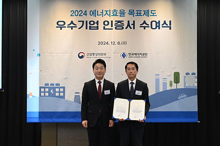
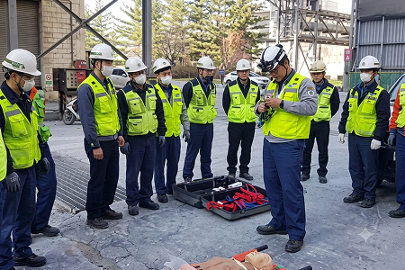
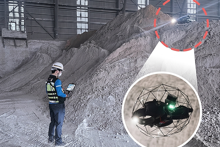

> ESG경영 > 안전보건 경영
Safety Management안전보건 경영
안전을 굳히고 생명을 지키는, 한일시멘트의 든든한 약속
임직원과 협력사 근로자의 생명과 안전을
최우선으로 하는 안전경영을 실천합니다.
한일시멘트는 선진 안전보건 경영 시스템과 행동기반 안전관리, 스마트 기술을 통해 사고 없는 현장을 만들어갑니다.
-

- 03. KOSHA MS 인증
- 선진 안전·보건 경영 시스템을 구축하여 안전보건공단의
KOSHA MS 인증을 취득했습니다.
-

- 03. SF100
- 행동기반 안전관리 규정과 절차로 작업자의 불안전행동을
데이터로 취합·개선합니다.
-

- 03. IoT 스마트 안전관리
- 뉴노멀 시대에 맞춰 IoT 신기술 기반 스마트 안전관리
플랫폼을 도입합니다.
STRATEGY
기본에 충실하면서도 중장기적인 실행방안과 역량 확보를 통해, 뉴노멀 시대를 위한 새로운 안전관리 패러다임을 구축합니다.
-
LEADERSHIP
- 안전리더십 행동강령
- DCOM 기반 10대 행동요인을 기초로, 계층별 안전리더십 행동강령 10개씩을 제정했습니다.
-
HSGRs
- Hanil Safety Golden Rules
- 절대 지켜야 할 행동기반 안전규정으로, 현장의 불안전 행동을 원천적으로 예방합니다.
-
SF100
- 사업장별 맞춤 안전보건경영시스템
- 시멘트·레미탈·슬래그·레미콘 각 사업장 특성에 맞춤 안전관리 절차를 운영합니다.
안전보건활동
안전관리 거버넌스를 중심으로, 현장 곳곳에서 실질적인 안전보건활동을 실천하고 있습니다.
-
01
- 안전보건조직 인력 운영
- 상시근로자 500명 이상 사업장에 안전·보건관리자 각 2명 이상 배치
-
02
- 안전 캠페인 실시
- 전 사업장 대상 정기 안전문화 캠페인 운영
-
03
- 합동안전점검 실시
- 화재 우려지역 대상 합동 안전점검 정례화
-
04
- 긴급구조훈련 실시
- 비상상황 대비 긴급구조훈련 정기 실시